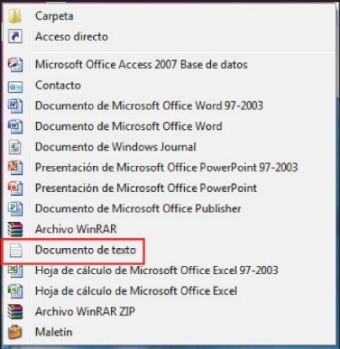
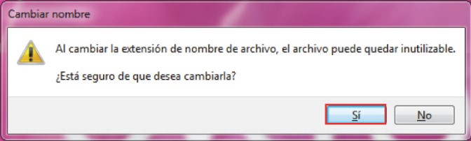
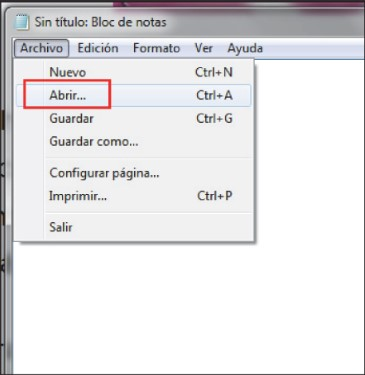
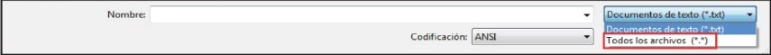
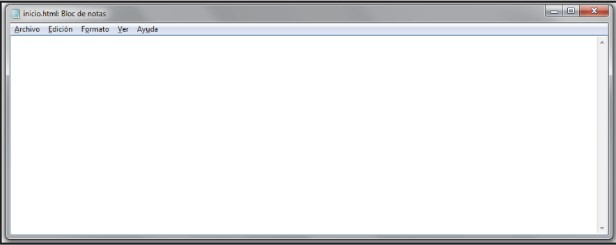

Fundamentos de HTML

Editores HTML
Según Luna, A. C. (2019). Un documento HTML no es mas que un archivo de texto, por tanto para crear o modificar archivos HTML basta con utilizar un editor de texto simple, como el bloc de notas de windows.
Existen editores más sofisticados como Frontpage o Dreamweaver. Estos editores presentan el código de forma más amigable, distinguiendo por ejemplo los diferentes tipos de etiquetas con colores o incorporando herramientas visuales para incorporar elementos, pero además de que se trata de herramientas de pago, no son recomendables cuando se está aprendiendo, debido a que en numerosas ocasiones introducen líneas de código automáticamente lo cual puede confundir al alumno.
Para crear un nuevo documento HTML en un ordenador con sistema operativo Windows, por ejemplo en el escritorio:
Hacer clic en el botón derecho del ratón (en cualquier punto del escritorio)
Pulsar nuevo

Seleccionar Documento de texto

Renombrar el archivo de Nuevo documento de texto.txt a inicio.html
Pulsar si

Al hacer doble clic sobre el archivo creado inicio.html, el sistema operativo Windows lo ejecutará, es decir, abrirá el navegador de internet e interpretará el código mostrándolo como una página web (en este caso mostrará una página en blanco ya que el archivo está vacío).
Para editar el archivo e introducir código:
Abrir el Bloc de notas de Windows.
Desplegar menú Archivo
Pulsa Abrir

En la parte inferior de la ventana explorador que aparece seleccionar Todos los archivos (*.*)

Selecciona el archivo inicio.html.
Pulsa Abrir

Desde aquí ya se puede escribir el código HTML dentro del archivo.
El código HTML
La especificación completa de la ultima version de HTML 4.0 puede consultarce de forma gratuita en la web: http://.w3.org/TR/html401. Esta normaoficial está escrita de maneraa muy formal y algunas secciones son dificiles de comprender. Afortunadamente no es necesario leer las recomendaciones oficiales para aprender a diseñar con paginas HTML.